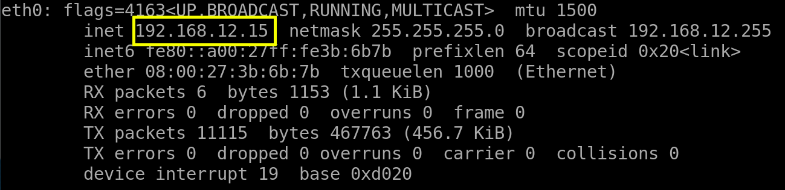

Os-Bytesec
Penetrating Methodologies
▸ 1. Scan Network
▸ 2. Finding Services and Ports
▸ 3. Visit the website
▸ 4. Enumerate Information about the System
▸ 5. Smbckient
▸ 6. Find the zip password
▸ 7. Use Aircrack-ng
▸ 8. SSH (First flag)
▸ 9. Second Flag
Difficulty: Intermediate
Flag: 2 Flag first user and second root
Learning: exploit | SMB | Enumration | Stenography | Privilege Escalation
Reference: https://www.vulnhub.com/entry/hacknos-os-bytesec,393/
Download (Mirror): https://download.vulnhub.com/hacknos/Os-ByteSec.ova
Download (Torrent): https://download.vulnhub.com/hacknos/Os-ByteSec.ova.torrent
Install the machine on VirtualBox:
1. Download the file.
2. On Virtualbox choose File->Import Appliance.
3. Select the file “ova”.
4. Accept to import.
Virtual Machine Network Settings
Both Machines on “Host-only Adapter”.

Watch your Machine IP
Output:

Diagram
 Index
Index